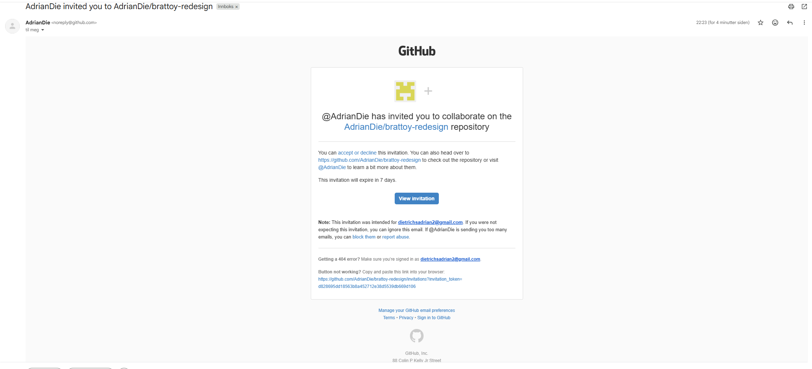
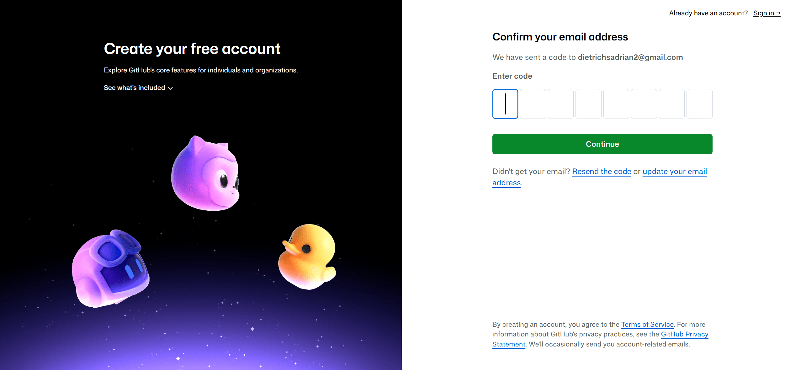
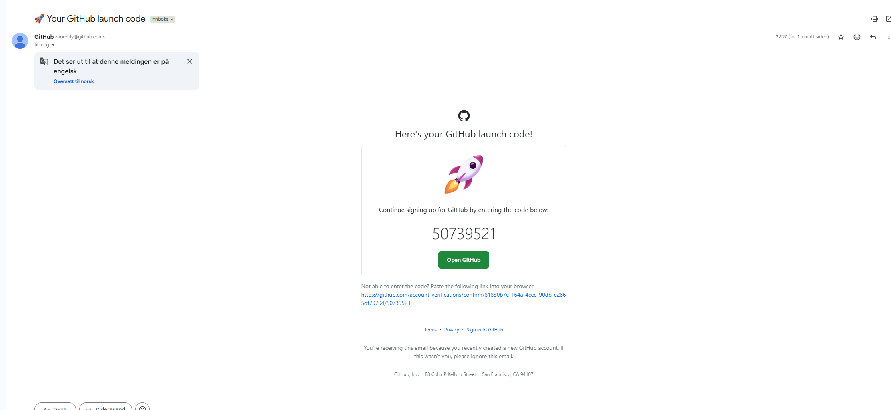
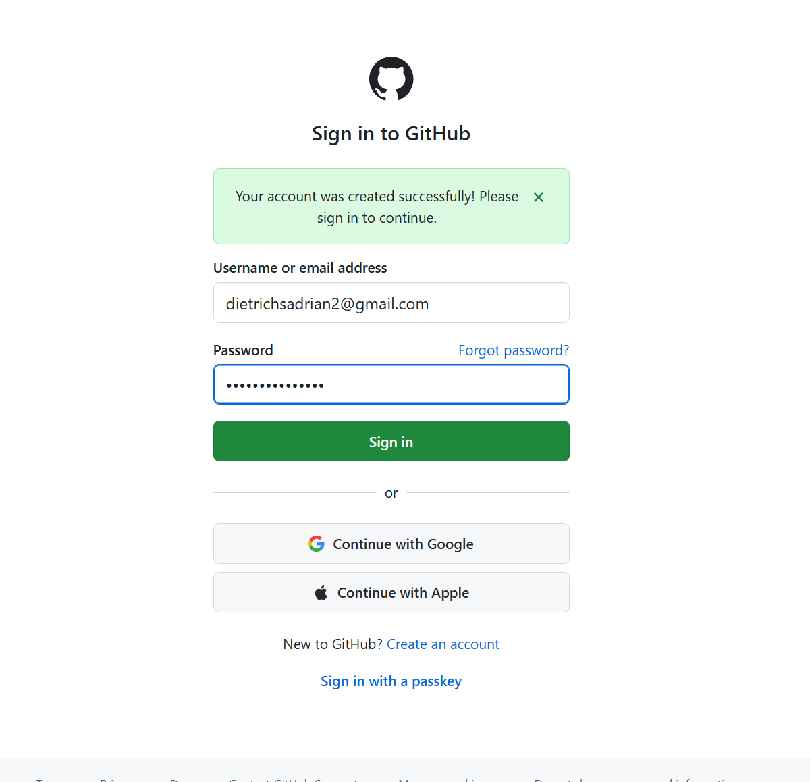
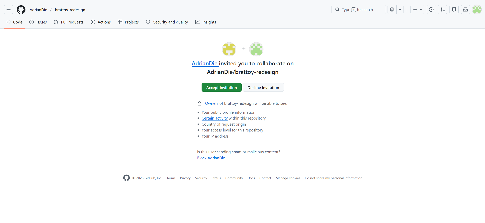
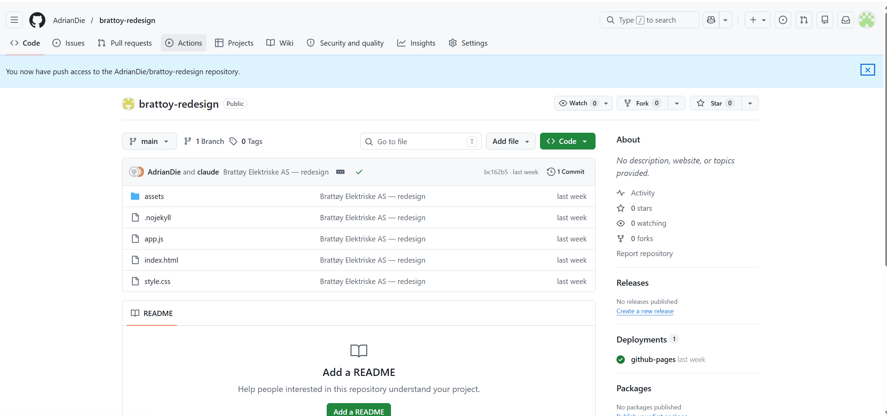
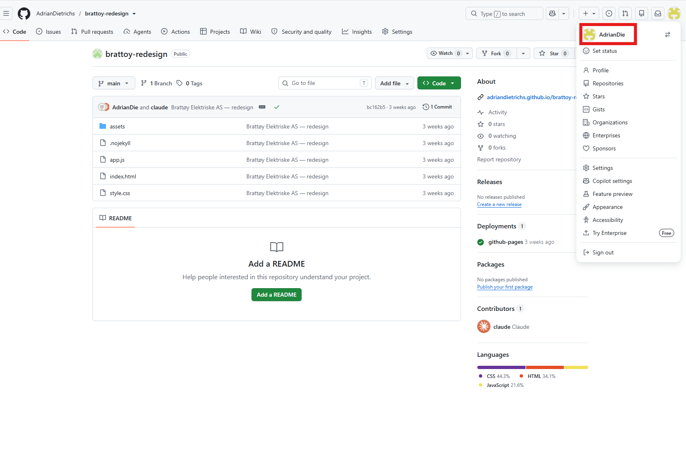
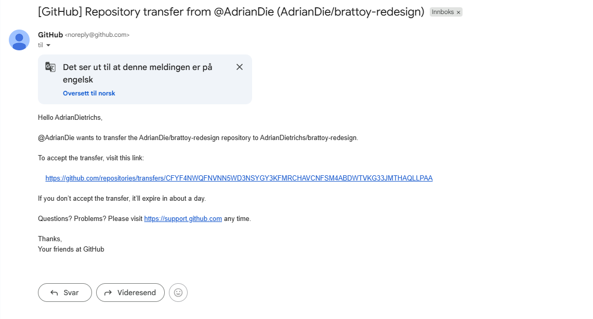
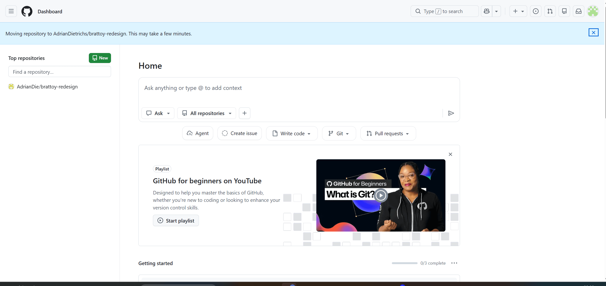

I denne modulen oppretter du en GitHub-konto og får nettsiden overført til deg. Det gjør du én gang. Deretter kobler du domenet ditt i modul 05, så er nettsiden live. Først i modul 06 installerer du VS Code og gjør din første endring.
Steg 1: Få tilgang til nettsiden din på GitHub
GitHub er stedet der alle filene til nettsiden din lagres. Du har allerede fått en invitasjon fra oss, så du trenger ikke gå til github.com selv. Vi bruker Brattøy Elektriske som eksempel her, men flyten er lik uansett hva firmaet ditt heter.
Finn invitasjonsmailèn
Sjekk e-posten du fikk da du startet dette kurset. Se etter en mail fra noreply@github.com med emnelinjen «[navn] invited you to collaborate». Finner du den ikke? Sjekk søppelpost-mappen.
Klikk på «View invitation» i mailen.

Opprett GitHub-konto
Du blir sendt til GitHub og bedt om å opprette en konto. Fyll inn samme e-postadresse som du fikk invitasjonen på, velg et passord og et brukernavn du husker. Bruk gjerne firmanavnet ditt som brukernavn, f.eks. brattoy. GitHub ber deg også om å skrive inn en kode for å bekrefte at e-posten er din, den finner du i innboksen din.

Bekreft e-postadressen din
Gå tilbake til innboksen og se etter en mail med tittelen «Your GitHub launch code». Der står en 8-sifret kode, skriv den inn på GitHub-siden.

Logg inn
Etter at kontoen er opprettet blir du bedt om å logge inn. Bruk e-postadressen og passordet du nettopp valgte.

Gå tilbake til invitasjonsmailèn og aksepter
Nå som du er logget inn: gå tilbake til den opprinnelige invitasjonsmailèn og klikk «View invitation» igjen. Du ser nå en side med to knapper, klikk «Accept invitation».

Du har nå tilgang til nettsiden din. For Brattøy Elektriske ser det slik ut på GitHub, her ser du alle filene nettsiden din består av:

Overfør repoet til din GitHub-konto
Fyll inn GitHub-brukernavnet du nettopp opprettet, så overfører vi repoet automatisk til deg. Da eier du det selv og kan klone det fritt.
Brukernavnet ditt finner du øverst til høyre på github.com etter innlogging, se bildet under.

Hva skjer nå? Etter at du sender inn brukernavnet ditt, starter vi overføringen av repoet. Du vil motta en e-post fra GitHub med emnelinjen «Repository transfer». Slik ser den ut:

Klikk lenken i e-posten og godkjenn overføringen på GitHub-siden som åpner seg. Etterpå ser du repoet i din egen GitHub-profil, slik:

Fungerer ikke knappen? Send GitHub-brukernavnet ditt til adrian@dmarketing.no, så ordner vi overføringen manuelt.
Hva skjer videre? Adrian overfører nå repoet til GitHub-kontoen din basert på brukernavnet du sendte inn. Du vil få en e-post fra GitHub med tittelen «Accept repository transfer», klikk lenken og godkjenn. Deretter er du klar for neste del.
- GitHub-konto opprettet og koblet til repoet ditt
- GitHub-brukernavn sendt, repo overføres automatisk